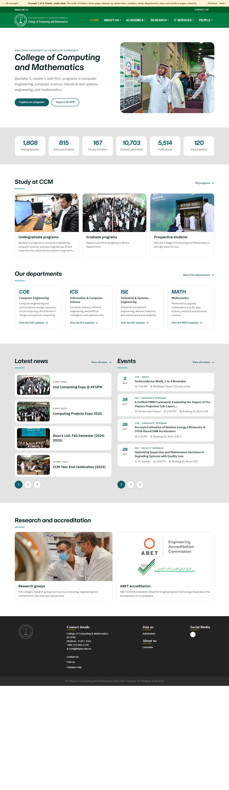
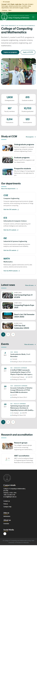
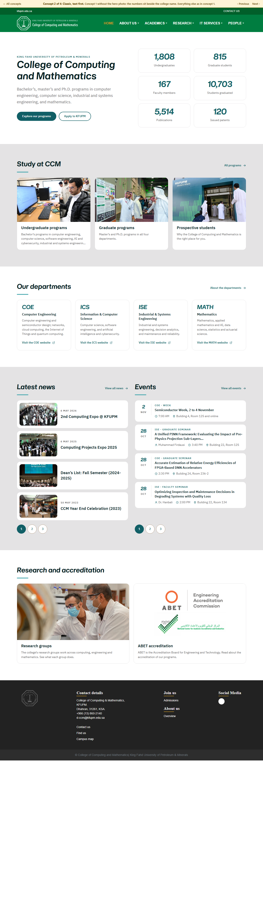
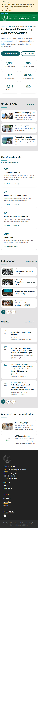
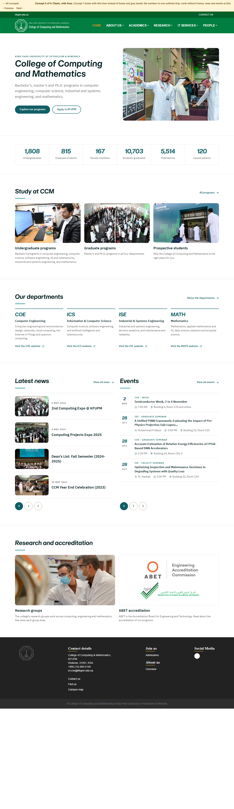
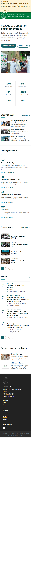
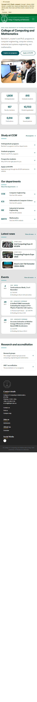

Round 3's photo-panel and centred versions are gone. Concept 1, "Classic, made clear", stays exactly as you chose it. The three new options are quieter versions of it: the same order and the same content, and each one takes something away (the hero photo, the boxes, or length). Each preview is the full home page between today's header and footer. Compare with today's home page.
What differs
The same in all four: the order (hero, numbers, study, departments, news and events, research), a white hero with colour only in the photos, buttons and links, the numbers in boxes or outlines, one card style, and today's header and footer.
| Part | 1 Classic (your choice) | 2 Text first | 3 With lines | 4 Compact |
|---|---|---|---|---|
| Hero | The name on the left, a photo on the right | The name on the left, the numbers on the right; no photo | As concept 1 | Lower: a smaller name and photo |
| Numbers | Six boxes in a grey band under the hero | In the hero, beside the name | One outlined strip, thin lines between the numbers | As concept 1 |
| Study, departments, research | Photo cards and department boxes | As concept 1 | The same without frames: photos and text on white, a turquoise line over each department | Short link lists without photos; study and departments side by side |
| News and events | Side by side, four at a time, with page numbers | As concept 1 | As concept 1, as lists with a line between items | The three latest of each; no page numbers |
| Between sections | Grey and white bands | Grey and white bands | All white, a thin line between sections | Grey and white bands |
| Length (computer / phone) | 3,280 / 4,750 px | 3,140 / 4,450 px | 3,280 / 4,440 px | 2,180 / 3,710 px, about a third shorter |
-


Concept 1 · your choice in round 2
Classic, made clear
Unchanged: the name beside a photo, the numbers in boxes, photo cards for study, the four departments, news and events side by side with page numbers, research and accreditation.
- Good for
- Everything where visitors of today's page expect it, only clearer.
- Watch out
- Pages 2 and 3 of the news are easy to miss. The longest of the four on phones.
-


Concept 2 · a variation of 1
Classic, text first
Concept 1 without the hero photo. The six numbers stand beside the college name, so the first screen says what the college is and how big it is. The first photos come in "Study at CCM".
- Good for
- The calmest, quickest first screen: no large photo to load or keep fresh, and the facts are seen at once.
- Watch out
- Less warmth at the top. On phones the numbers come after the buttons.
-


Concept 3 · a variation of 1
Classic, with lines
Concept 1 drawn with thin lines instead of boxes and grey bands: a line between sections, the numbers in one outlined strip, cards without frames, news and events as lists.
- Good for
- The most minimal look: lots of white, very little boxed in, like a printed report.
- Watch out
- With no grey bands, only the titles and thin lines separate the sections.
-


Concept 4 · a variation of 1
Classic, compact
Concept 1, about a third shorter: a lower hero, study and departments as two link lists side by side, the three latest news and events, and research as two links.
- Good for
- Reaching everything with the least scrolling; the fewest photos to keep up to date.
- Watch out
- Plainer, with fewer photos. Older news is one click away, under "View all news".
Things to know
- Mix and match. All four share the same parts, so any part can move between them: for example, concept 1 with Compact's three latest news and events, or Text first drawn with lines.
- Text to confirm: the line under the college name and the one-line department descriptions (written from the programs list).
- What it takes in Sitefinity: a new home page layout (page template access) and widget templates for news and events. The fixed parts could also be Content blocks.
- Photos: some library photos are very large files, so the real page needs web-sized copies. Text first needs no hero photo at all.
Why these variations
- Say who we are, then show facts. University visitors want an easy-to-scan list of facts, not numbers buried in paragraphs, and a home page should open with a line that says what the site offers, not a welcome message (NN/g). Text first puts the facts right beside the name.
- Photos only when they say something. Decorative images get skipped, and real college photos beat stock (NN/g). Without a strong photo, Text first is better than a weak one.
- Space groups things as well as boxes. Things placed close together are seen as one group, even without a frame (NN/g, the "proximity" principle). That is why Lines can drop the boxes and grey bands and still read in order.
- Less to scroll, clear order. Show a sample of each section, keep a clear order of importance ("if everything is emphasised, nothing stands out"), and avoid sliding carousels and pop-ups (NN/g). Compact goes furthest; none of the four uses sliders or pop-ups.
- What well-rated minimal college sites share: plenty of white space, clear type, few colours, real photos and short text (Colorlib, Webflow and Numiko showcases).
Sources: